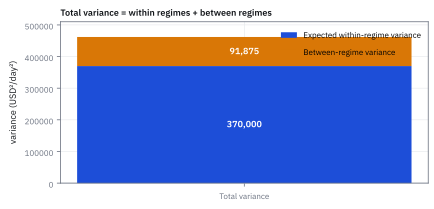
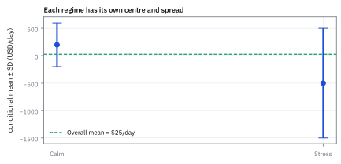
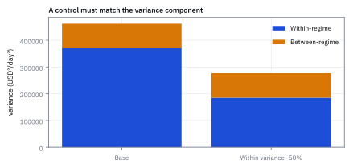
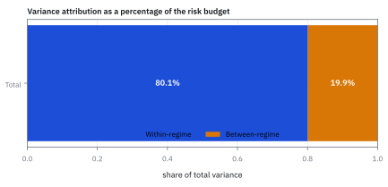

2.2 The Law of Total Variance (EVVE)
แยก variance ภายในแต่ละสภาวะ ออกจาก variance ระหว่างสภาวะตลาด
ตู้กดน้ำมีโหมดเย็นตั้งไว้ 5 องศากับโหมดร้อนตั้งไว้ 25 องศา ใช้อย่างละครึ่งของเวลา แต่ละโหมดคลาดจากที่ตั้งราว 1 องศา อุณหภูมิน้ำที่ออกมาเหวี่ยงกว้างแค่ไหน และความผันผวนนั้นมาจากไหน?
เฉลย: เหวี่ยงราว 10 องศา ไม่ใช่ 1 องศา ความคลาดในแต่ละโหมดให้ variance แค่ 1 ส่วนการที่ค่าเฉลี่ยของสองโหมดอยู่ห่างจุดกึ่งกลาง 15 องศาไปข้างละ 10 องศา ให้ variance อีก 100 รวม 101 หรือราว 10 องศา ความผันผวนเกือบทั้งหมดมาจากการสลับโหมด ไม่ใช่จากความแม่นของเครื่อง
การแยกความผันผวนรวมเป็นสองก้อนแบบนี้ชื่อ Law of Total Variance หรือ EVVE ใช้บอกว่าความเสี่ยงของพอร์ตมาจากความผันผวนภายในแต่ละสภาวะตลาด หรือจากการที่ตลาดสลับสภาวะ แล้วควรไปแก้ที่ก้อนไหน
ศัพท์ที่ใช้ในหัวข้อนี้
- variance
- ค่าเฉลี่ยของระยะห่างจากค่าเฉลี่ยที่คูณตัวเองแล้ว ใช้วัดว่าผลลัพธ์เหวี่ยงกว้างแค่ไหน และบวกกันได้เมื่อแยกเป็นก้อน (สร้างเต็มในหัวข้อ 1.4)
- standard deviation (SD)
- รากที่สองของ variance ใช้บอกความผันผวนในหน่วยเงินต่อวัน จึงเทียบกับกำไรขาดทุนได้ตรง ๆ
- Law of Total Variance (EVVE)
- กฎที่แยก variance รวมเป็นค่าเฉลี่ยของ variance ภายในแต่ละสภาวะ บวก variance ของค่าเฉลี่ยระหว่างสภาวะ ใช้ชี้ว่าความเสี่ยงมาจากความผันผวนภายในหรือจากการสลับสภาวะ
- regime
- สภาวะตลาดที่พฤติกรรมผลตอบแทนต่างกันชัด เช่นสงบกับตึงเครียด ใช้เป็นกรณีที่แยกคิดทีละกรณี
- SPX
- ดัชนี S&P 500 ของหุ้นใหญ่ 500 บริษัทในสหรัฐ ใช้เป็นตัวแทนตลาดของพอร์ตในโจทย์นี้
- Analysis of Variance (ANOVA)
- วิธีทางสถิติที่แยกความผันผวนของข้อมูลเป็นส่วนที่อธิบายได้ด้วยกลุ่ม กับส่วนที่เหลือภายในกลุ่ม ใช้ตอบว่าความต่างระหว่างกลุ่มใหญ่พอจะเชื่อได้ไหม
- R²
- สัดส่วนของ variance ที่แบบจำลองอธิบายได้ ในหัวข้อนี้คือส่วนของก้อนระหว่างสภาวะต่อ variance รวม (ใช้เต็มในบทที่ 15)
- Sharpe ratio
- ผลตอบแทนเฉลี่ยหาร standard deviation ใช้วัดผลตอบแทนต่อความเสี่ยงหนึ่งหน่วย
- performance attribution
- การแยกว่าผลงานของกองทุนมาจากการเลือกกลุ่มอุตสาหกรรมหรือการเลือกหุ้นรายตัว ใช้ตัดสินว่าทีมเก่งตรงไหน
- momentum
- กลยุทธ์ซื้อสิ่งที่ราคากำลังขึ้นและขายสิ่งที่ราคากำลังลง ใช้เป็นตัวอย่างกลยุทธ์สามสภาวะจากหัวข้อ 2.1
สัญลักษณ์ที่ใช้ในหัวข้อนี้
| สัญลักษณ์ | ความหมาย | หน่วย |
|---|---|---|
| $Y$ | กำไรขาดทุนรายวันของพอร์ต | USD ต่อวัน |
| $X$ | สภาวะตลาดของวันนั้น calm หรือ stress | — |
| $\mathbb{E}[Y\mid X]$ | ค่าเฉลี่ยกำไรขาดทุนภายในสภาวะ ซึ่งยังสุ่มตาม $X$ | USD ต่อวัน |
| $\mathrm{Var}(Y\mid X)$ | variance ภายในสภาวะ ซึ่งยังสุ่มตาม $X$ | USD² ต่อวัน² |
| $\mu$ | ค่าเฉลี่ยรวมก่อนรู้สภาวะ | USD ต่อวัน |
| $\mathrm{Var}(Y)$, $\mathrm{SD}(Y)$ | variance และ standard deviation รวม | USD² ต่อวัน², USD ต่อวัน |
| $R$ | ผลตอบแทนรายเดือนของกลยุทธ์ momentum ในตัวอย่างที่สอง | % ต่อเดือน |
ที่มาที่ไป: ค่าเฉลี่ยแตกเป็นชั้นได้ แล้วความเสี่ยงล่ะ
หัวข้อ 2.1 แตกค่าเฉลี่ยเป็นชั้นได้ คำถามถัดมาคือความเสี่ยงแตกได้แบบเดียวกันไหม คำตอบคือแตกได้ แต่ออกมาสองก้อน ไม่ใช่ก้อนเดียว คือความผันผวนภายในแต่ละสภาวะ กับความต่างของค่าเฉลี่ยระหว่างสภาวะ แบบตู้กดน้ำในคำถามเปิด
ราวปี 1918 ถึง 1925 Ronald Fisher แยกความผันผวนของผลผลิตในแปลงทดลองเป็นภายในกลุ่มกับระหว่างกลุ่ม กลายเป็น Analysis of Variance คนในวงการประกันภัยเรียกกฎนี้ว่า Eve's Law ตามตัวอักษร E, V, V, E และทศวรรษ 1960 Hans Bühlmann ใช้มันตั้งเบี้ยประกันที่แยกความเสี่ยงของผู้เอาประกันออกจากความไม่แน่นอนของกลุ่ม
โจทย์ของ risk desk: ความเสี่ยงมาจากความผันผวนรายวัน หรือจากตลาดสลับสภาวะ
พอร์ตหุ้นสหรัฐที่อิงดัชนี SPX มีกำไรขาดทุนรายวัน $Y$ เป็นดอลลาร์ ตลาดมีสองสภาวะ คือสงบ 75% ของวัน และตึงเครียด 25% ของวัน
ในวันสงบ พอร์ตได้เฉลี่ย \$200 และเหวี่ยง \$400 ในวันตึงเครียด พอร์ตเสียเฉลี่ย \$500 และเหวี่ยง \$1,000 ฝ่ายความเสี่ยงอยากรู้ว่าความผันผวนรวมเท่าไร และมาจากก้อนไหนมากกว่า
ขั้นที่ 1 — ลองนับตรง ๆ ก่อน: แปดวันที่ตรงกับตัวเลขโจทย์
สร้างแปดวันที่มีโอกาส ค่าเฉลี่ย และความผันผวนตรงกับโจทย์พอดี: วันสงบหกวัน เป็น 600 กับ −200 สลับกัน วันตึงเครียดสองวัน เป็น 500 กับ −1,500 แล้วหา variance แบบหัวข้อ 1.4
วันสงบ 600 กับ −200 มีค่าเฉลี่ย 200 และห่างจากค่าเฉลี่ยข้างละ 400 วันตึงเครียด 500 กับ −1,500 มีค่าเฉลี่ย −500 และห่างข้างละ 1,000 หกวันจากแปดคือ 75% ตรงโจทย์
วัดระยะแต่ละวันจากค่าเฉลี่ยรวม 25 คูณตัวเอง แล้วเฉลี่ย ได้ variance 461,875 นี่คือคำตอบแบบนับตรง ๆ ขั้นถัดไปจะแยกเลขนี้เป็นสองก้อนที่อ่านความหมายได้
ขั้นที่ 2 — ค่าเฉลี่ยรวม ด้วยกฎของหัวข้อ 2.1
ทั้งสองก้อนวัดระยะจากค่าเฉลี่ยรวม จึงต้องหามันก่อน
วันสงบ 75% ดึงขึ้น 150 วันตึงเครียด 25% ดึงลง 125 เหลือเฉลี่ยวันละ \$25 ตรงกับค่าเฉลี่ยของแปดวันในขั้นที่ 1
ขั้นที่ 3 — ก้อนภายในสภาวะ: ความผันผวนที่ยังอยู่แม้รู้สภาวะแล้ว
ถ้ารู้แล้วว่าวันนี้สงบ ผลก็ยังเหวี่ยง \$400 ถ้ารู้ว่าตึงเครียด ก็ยังเหวี่ยง \$1,000 เอา variance ของแต่ละสภาวะมาเฉลี่ยตามโอกาส
ต้องคูณความผันผวนแต่ละสภาวะกับตัวเองก่อนเฉลี่ย เพราะสิ่งที่บวกกันได้คือ variance ไม่ใช่ standard deviation ตามหัวข้อ 1.4 ก้อนนี้คือ 370,000 USD² ต่อวัน²
ขั้นที่ 4 — ก้อนระหว่างสภาวะ: ความผันผวนจากการไม่รู้ว่าวันนี้เป็นสภาวะไหน
สมมติว่าในแต่ละสภาวะผลออกมาเท่ากับค่าเฉลี่ยของสภาวะนั้นพอดี ไม่มีความผันผวนเลย ผลยังกระโดดระหว่าง 200 กับ −500 ได้ วัดความผันผวนของการกระโดดนี้รอบค่าเฉลี่ยรวม 25
ค่าเฉลี่ยของวันสงบอยู่เหนือค่าเฉลี่ยรวม 175 ค่าเฉลี่ยของวันตึงเครียดอยู่ใต้ 525 คูณตัวเองแล้วเฉลี่ยตามโอกาสได้ 91,875 นี่คือความเสี่ยงที่หายไปได้ถ้ารู้ล่วงหน้าว่าพรุ่งนี้เป็นสภาวะไหน
ขั้นที่ 5 — สองก้อนรวมกันได้ variance ของขั้นที่ 1 พอดี
บวกก้อนภายในกับก้อนระหว่าง แล้วเทียบกับคำตอบที่นับตรง ๆ
ได้ 461,875 เท่ากับที่นับแปดวันในขั้นที่ 1 ทุกหลัก ไม่ขาดไม่เกิน ขั้นที่ 8 จะพิสูจน์ว่าทำไมสองก้อนนี้รวมกันได้พอดีเสมอ
ขั้นที่ 6 — แปลงกลับเป็นหน่วยเงินต่อวัน
variance มีหน่วยเงินคูณเงิน ใช้สื่อสารกับใครไม่ได้ จึงถอดรากกลับ
พอร์ตได้เฉลี่ยวันละ \$25 แต่เหวี่ยงวันละราว \$680 ความผันผวนสูงกว่าค่าเฉลี่ยราว 27 เท่า แบบเดียวกับไม้ TSLA ในหัวข้อ 1.4
ขั้นที่ 7 — แต่ละก้อนเป็นกี่เปอร์เซ็นต์ของความเสี่ยงรวม
ก่อนตัดสินใจแก้ปัญหา ต้องรู้ว่าก้อนไหนใหญ่ หารแต่ละก้อนด้วยผลรวม
ราว 80% ของ variance อยู่ภายในสภาวะ ต่อให้ทายสภาวะถูกทุกวัน ก็ลดความเสี่ยงได้แค่ราว 20% ของ variance งานที่คุ้มกว่าคือคุมขนาดสถานะในวันตึงเครียด ซึ่งเหวี่ยงถึง \$1,000
ขั้นที่ 8 — พิสูจน์ว่าสองก้อนรวมกันได้พอดีเสมอ
ใช้สูตรลัดของ variance จากหัวข้อ 1.4 กับกฎเฉลี่ยสองชั้นของหัวข้อ 2.1 และต้องการแค่ให้ค่าเฉลี่ยของ $Y^2$ มีค่าจำกัด
บรรทัดที่สามถึงสี่ใส่กฎของหัวข้อ 2.1 ทั้งกับ $Y^2$ และกับ $Y$ บรรทัดที่ห้าถึงหกใช้สูตรลัดของ variance ภายในสภาวะที่ย้ายข้างแล้ว ซึ่งทำไว้แล้วในหัวข้อ 2.1
ในวงเล็บปีกกาคือค่าเฉลี่ยของกำลังสอง ลบกำลังสองของค่าเฉลี่ย ของ random variable $\mathbb{E}[Y\mid X]$ ซึ่งคือ variance ของมันตามสูตรลัดเดิม ได้สองก้อนพอดี ชื่อ EVVE มาจากลำดับตัวอักษรของสองก้อนนี้
แล้วเอาไปใช้ทำอะไรได้จริงบ้าง
ถ้าก้อนใหญ่คือความผันผวนภายในสภาวะ ให้แก้ที่ขนาดสถานะหรือการส่งคำสั่ง ถ้าก้อนใหญ่คือความต่างระหว่างสภาวะ การอ่านสภาวะให้ออกจะคุ้มค่า
ในการวัดผลกองทุน ก้อนระหว่างกลุ่มคือผลจากการเลือกกลุ่มอุตสาหกรรม ก้อนภายในกลุ่มคือผลจากการเลือกหุ้นในกลุ่ม ในสถิติ โครงสร้างเดียวกันคือ ANOVA และคือที่มาของการแยก R² ใน regression ของบทที่ 15
Figure 2.2a — variance รวมแยกเป็นสองก้อน

แท่งล่าง 370,000 คือความผันผวนภายในแต่ละสภาวะ แท่งบน 91,875 คือความต่างของค่าเฉลี่ยระหว่างสองสภาวะ รวมกันได้ 461,875 เท่ากับที่นับแปดวันในขั้นที่ 1
Figure 2.2b — ค่าเฉลี่ยและความผันผวนในแต่ละสภาวะ

จุดคือค่าเฉลี่ย แถบคือบวกลบหนึ่งเท่าของความผันผวน วันตึงเครียดเลวร้ายสองทาง คือค่าเฉลี่ยทรุดลงเป็น −\$500 และเหวี่ยงกว้างขึ้นเป็น \$1,000 ตัวเลขรวมตัวเดียวบอกภาพนี้ไม่ได้
Figure 2.2c — แก้ก้อนหนึ่ง อีกก้อนไม่ขยับ

ลดความผันผวนภายในสภาวะลงครึ่งหนึ่ง แท่งน้ำเงินหดครึ่ง แต่แท่งส้มของการสลับสภาวะสูงเท่าเดิม เครื่องมือคุมความเสี่ยงจึงต้องเลือกให้ตรงกับก้อนที่ต้องการลด
Figure 2.2d — สัดส่วนของแต่ละก้อน

ก้อนภายใน 80.1% ก้อนระหว่าง 19.9% รวมกันได้ 100% เสมอ ในโจทย์นี้งานแรกจึงเป็นการคุมความผันผวนรายวัน ไม่ใช่การทายสภาวะ
Worked Example — โจทย์จิ๋วที่คำนวณได้
โจทย์ให้อะไรมาบ้าง: ก้อนภายในสภาวะ 370,000 และก้อนระหว่างสภาวะ 91,875 หน่วย USD² ต่อวัน²
คำตอบ: variance รวมคือ 461,875 และ standard deviation ราว \$679.61 ต่อวัน
ตรวจเองใน 10 วินาที: บวกสองก้อนต้องได้ 461,875 และถอดรากต้องได้ใกล้ 680 ถ้าได้ 550 แปลว่าเผลอเฉลี่ยความผันผวน 400 กับ 1,000 ตรง ๆ แทนที่จะรวม variance
แปลว่าอะไร: ลดความผันผวนภายในสภาวะอย่างเดียวไม่ได้แก้ความเสี่ยงจากการสลับสภาวะ กับดักคือบวก standard deviation แทนที่จะบวก variance
Worked Example 2.2 — ความเสี่ยงของกลยุทธ์ momentum สามสภาวะ
โจทย์ให้อะไรมาบ้าง: กลยุทธ์ momentum ของหัวข้อ 2.1 มีสามสภาวะต่อเดือน ผันผวนต่ำ โอกาส 0.55 เฉลี่ย +0.9% ผันผวน 1.2% ผันผวนปกติ โอกาส 0.32 เฉลี่ย +0.3% ผันผวน 2.4% และวิกฤต โอกาส 0.13 เฉลี่ย −2.1% ผันผวน 6.5% ค่าเฉลี่ยรวม +0.318% ต่อเดือน
คำตอบ: ก้อนระหว่างสภาวะ 0.55×0.81 + 0.32×0.09 + 0.13×4.41 เท่ากับ 1.0476 ลบ 0.1011 ซึ่งคือ 0.318 คูณตัวเอง ได้ 0.9465 ก้อนภายใน 0.55×1.44 + 0.32×5.76 + 0.13×42.25 ได้ 8.1277 รวม 9.074 ถอดรากได้ 3.01% ต่อเดือน หรือราว 10.4% ต่อปี
ตรวจเองใน 10 วินาที: 0.9465 บวก 8.1277 ต้องได้ 9.074 และ 3.01 คูณราก 12 ซึ่งคือ 3.464 ต้องได้ราว 10.4 ผลตอบแทนทบต้นราว 3.9% ต่อปีหาร 10.4% ได้ Sharpe ratio ราว 0.37
แปลว่าอะไร: ก้อนภายในคือ 89.6% ต่อให้มีแบบจำลองที่ทายสภาวะถูกทุกเดือน variance ลดได้แค่ 10.4% และ SD ลดจาก 3.01% เหลือ 2.85% หรือแค่ 5.4% ก่อนจ้างทีมทำ model ทายสภาวะ ให้คำนวณสัดส่วนนี้ก่อน เพราะมันคือเพดานประโยชน์สูงสุด
กับดัก: เอา standard deviation มาถ่วงน้ำหนักตรง ๆ
เฉลี่ยความผันผวนของวันสงบกับวันตึงเครียดตรง ๆ ได้ 0.75×400 + 0.25×1,000 = \$550 ต่อวัน ต่ำกว่าความเสี่ยงจริง \$679.61 เพราะข้ามก้อนระหว่างสภาวะไปทั้งก้อน และ standard deviation บวกกันไม่ได้ตั้งแต่แรก
ในโจทย์สามสภาวะ เฉลี่ยความผันผวนตรง ๆ ได้ 2.273% ต่ำกว่าความจริง 3.01% ทำให้พอร์ตดูปลอดภัยเกินจริง ส่วนคนที่คำนวณแค่ก้อนภายใน 8.1277 แล้วเรียกว่า variance รวม ก็ขาดก้อนระหว่าง 0.9465 หรือ 10.4% ของความเสี่ยง
ตัวเลขความผันผวนภายในสภาวะ 1.2, 2.4 และ 6.5 ประมาณจากข้อมูลย้อนหลัง ในวิกฤตจริงตัว 6.5 มักโตกว่าที่ประมาณ และมันคือตัวที่ครองความเสี่ยงรวมอยู่แล้ว
ข้อจำกัด: วิธีนี้สมมติอะไร และของจริงเป็นอย่างไร
| เรื่อง | วิธีนี้สมมติว่า | ของจริงเป็นอย่างไร | ผลที่ตามมาเวลาใช้งาน |
|---|---|---|---|
| จำนวนสภาวะ | สภาวะมีจำนวนจำกัดและระบุได้ | ตลาดเปลี่ยนต่อเนื่อง ไม่ได้กระโดดเป็นขั้น | การแบ่งเป็นสองหรือสามสภาวะเป็นการทำให้ง่ายเกินจริง |
| การวัดย้อนหลัง | ระบุสภาวะได้ตอนนั้น | มักรู้ว่าเป็นสภาวะไหนหลังจากผ่านไปแล้ว | ผลที่คำนวณย้อนหลังดูดีกว่าที่ใช้ได้จริง |
| ความคงที่ | ค่าเฉลี่ยและความผันผวนในแต่ละสภาวะคงที่ | มันเลื่อนไปเรื่อย ๆ โดยเฉพาะในวิกฤต | ต้องคำนวณใหม่เป็นระยะ ไม่ใช่คำนวณครั้งเดียวแล้วใช้ตลอด |
แถวกลางคือกับดักที่ทำให้ backtest ของกลยุทธ์จับจังหวะสภาวะดูดีเกินจริงเกือบทุกครั้ง
โค้ดแยก variance ของแปดวันเป็นก้อนภายในกับก้อนระหว่างสภาวะ
import numpy as np
y = np.array([600] * 3 + [-200] * 3 + [500, -1500])
assert y.mean() == 25 and y.var() == 461_875
calm, stress = y[:6], y[6:]
assert calm.mean() == 200 and calm.std() == 400 and stress.mean() == -500 and stress.std() == 1000
mu = 0.75 * 200 + 0.25 * (-500)
within = 0.75 * 400 ** 2 + 0.25 * 1000 ** 2
between = 0.75 * (200 - mu) ** 2 + 0.25 * (-500 - mu) ** 2
assert mu == 25 and within == 370_000 and between == 91_875
assert within + between == y.var()
assert abs(np.sqrt(within + between) - 679.61) < 5e-3
assert abs(within / 461_875 - 0.801) < 5e-4 and abs(between / 461_875 - 0.199) < 5e-4โค้ดคิด variance ของแปดวันตรง ๆ ได้ 461,875 แล้วคิดใหม่ด้วยสองก้อน 370,000 กับ 91,875 ได้เลขเดียวกันพอดี ก้อนภายในสภาวะคือราว 80% ของความเสี่ยงทั้งหมด
สรุปที่ใช้ได้จริง
- variance รวมเท่ากับค่าเฉลี่ยของ variance ภายในสภาวะ บวก variance ของค่าเฉลี่ยระหว่างสภาวะ: 370,000 บวก 91,875 ได้ 461,875 เท่ากับที่นับตรง ๆ
- รวม variance ให้ครบก่อน แล้วค่อยถอดรากเป็น standard deviation เฉลี่ยความผันผวนตรง ๆ ได้ 550 ซึ่งต่ำกว่าความจริง 680
- ก้อนระหว่างสภาวะคือเพดานของประโยชน์จากการทายสภาวะ: กลยุทธ์ momentum ทายถูกทุกเดือนยังลด SD ได้แค่ 5.4%
- โครงสร้างเดียวกันคือ ANOVA ในสถิติ การแยก R² ใน regression และ performance attribution ของกองทุน